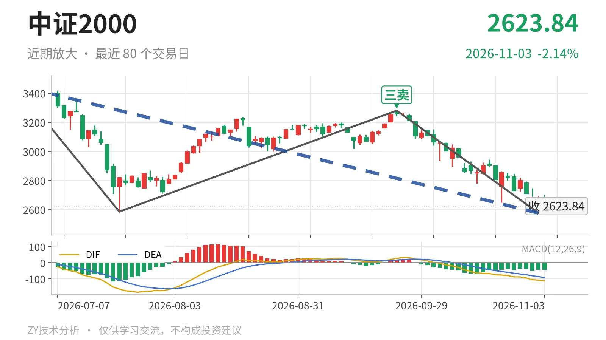

中证2000｜跌破3381点中枢下沿

最近日线中枢 3381.36—3593.19点，收盘位于中枢之下
一句话：价格在最近中枢下沿下方，反抽未成笔，先看3381点压力。
📉 走势结构：上涨段后回落段延续
中证2000日线级别当前处在2025年11月21日至2026年5月14日上涨线段之后的回落段里，5月14日以来的下跌线段还在延续。更大级别看，2024年2月6日至2026年5月14日的上涨段从1503.44点涨到3768.08点，上涨约150.6%；5月14日之后的下跌段已经跌约31.6%，低点2576.02点。日线线段层面，这段回落含5笔，低点已经低于前一轮上涨线段的起点2944.56点，因此不是浅回调，而是对大级别上涨的深度回拉。当前没有出现反向线段破坏，结构仍以回落段延续看待。

🧭 中枢与位置：跌破最近中枢下沿
最新收盘2623.84点，位于最近日线笔中枢1月26日至3月23日（3381.36—3593.19点）下方，低于下沿约22.4%。这个中枢中轴3487.28点，比2024年11月12日至2025年6月23日中枢（2293.12—2547.90点）明显上移，但价格已经回落到其下沿之下。最近中枢成为上方压力区，价格要回到该中枢内部至少要先收复3381点附近。
📌 买卖点：三卖后类二买暂定
日线笔级别里，5月14日一卖3768.08点、6月23日二卖3626.48点、9月22日三卖3280.29点，三个结构点一个比一个低。9月22日三卖出现在7月21日至9月22日上涨笔，反弹没有触及最近中枢下沿3381.36点，之后继续走出新低。线段级别上，11月2日2576.02点是暂定的类二买，因为它所在线段5月14日至11月2日还没有结束，这个买点会随线段延续而变化，不能单独当作转折依据。

⚡ 背驰：DIF不新低，力度未配合
比较两组同向下跌笔：6月23日至7月21日下跌笔从3626.48点至2585.35点，跌28.7%，绿柱面积810，DIF低点-164.2；9月22日至11月2日下跌笔从3280.29点至2576.02点，跌21.5%，绿柱面积873，DIF低点-108.5。后者创出2576.02点新低，DIF低点却没有同步新低，但绿柱面积没有收缩，反而略放大，因此只能算DIF不新低，不是标准的新低不新弱。由于5月14日以来下跌段还在延续，这个背驰判断要等后续成笔来验证。
🔎 关键位置观察
11月3日单根K线最高2703.93点、最低2606.40点，尚未构成新的日线笔，反抽仍处于未成笔状态。反抽若回不到3381点上方，该中枢下移延续，下跌段不变；若重新站上3381点，下跌更可能只是中枢扩展，转入震荡。更近压力看3280点附近，也就是9月22日三卖位置，站不上3280点则三卖后的弱势延续。下方2576点一线是11月2日暂定类二买位置，若再创新低跌破2576点，该买点随线段延续而失效，回落段继续向下延伸。结构判断偏弱，弱在价格处于最近中枢下沿下方22.4%，且3280点与3381点均未收复。
⚠️ 本文为基于公开行情数据的缠论技术结构记录，由程序自动计算并生成，仅供学习交流，不构成任何投资建议。市场有风险，投资需谨慎。